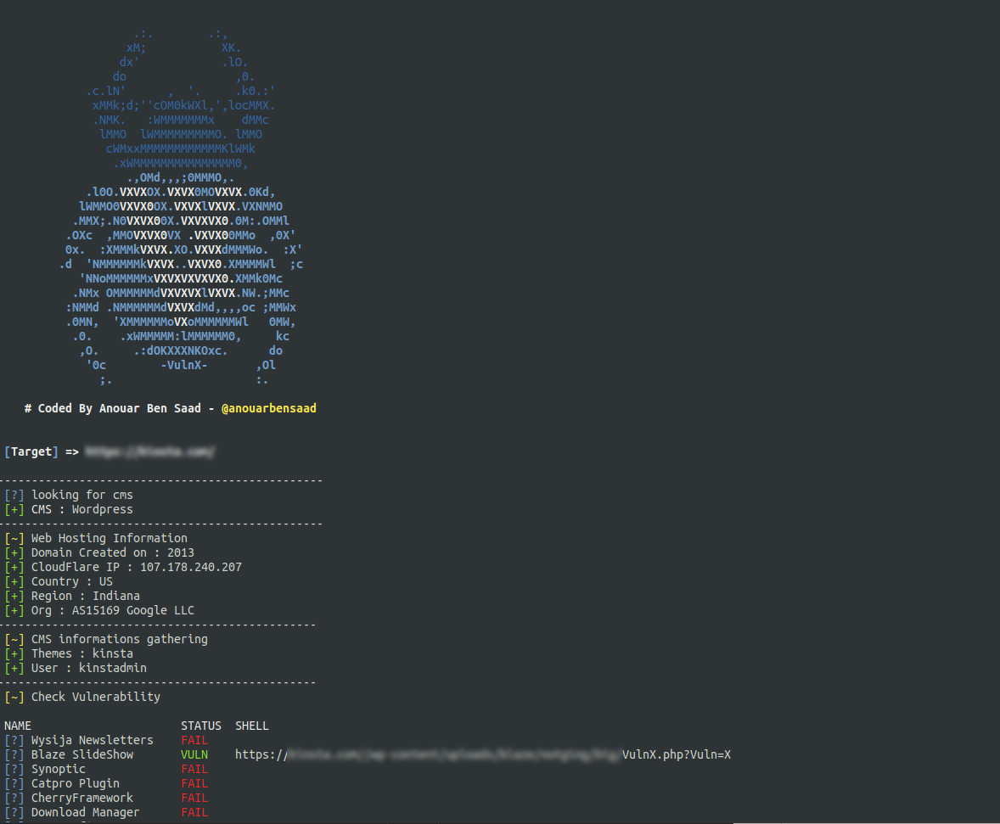
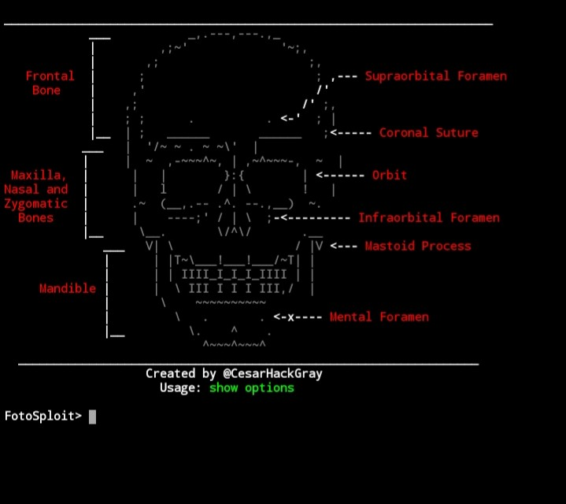

HERRAMIENTAS PARA Termux/Kali linux

vulnx 🕷️Un bot inteligente, Shell puede lograr la inyección automática y ayudar a los investigadores a detectar vulnerabilidades de seguridad del sistema CMS. Puede realizar una detección de seguridad rápida de CMS, recopilación de información (incluido el nombre de subdominio, dirección IP, información del país, información organizacional y zona horaria, etc.) y escaneo de vulnerabilidades.
kali linux

termux
_________________________________________________________________________________________________
2-FotoSploit
FotoSploit es un exploit que ensambla la foto
de nuestra víctima en un enlace falso {phishing}
termux / Kali linux [nethunter]

¡¡¡Ojo!!!
El link portador por serveo o ngrok les informo que
en messenger [facebook] no saca la foto de la víctima :(
el link solo saca la foto en Whatzapp o en telegram u otro chat
ok!.

INSTALACION